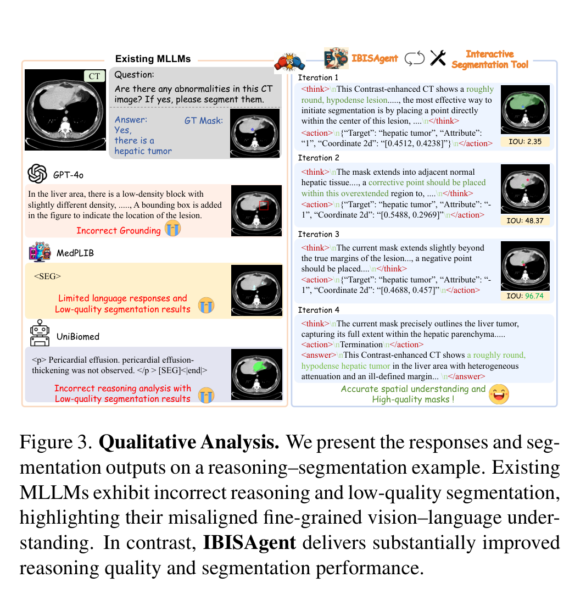
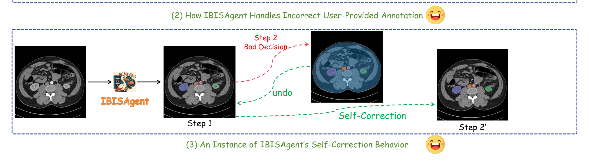
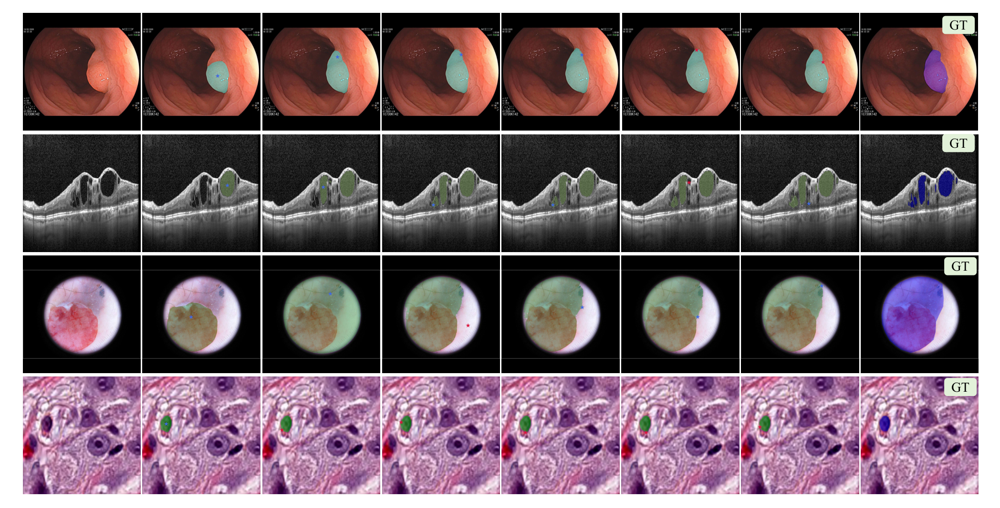

5. 方法：两段训练 + 五类奖励，如何“逼”出标注员式策略？
能力来自模型原生的视觉定位与动作规划，再由端到端 SFT（§5.1）与 RL 训练（§5.2）激励、增强。
5.1 冷启动 SFT：先学会“会用工具、懂正负点击”
纯提示（prompt-only）不足以让多模态智能体可靠地做迭代视觉操作——精度和鲁棒性都不够。所以先用 SFT 在冷启动数据 $D_{cold}$ 上把“像素空间推理范式”立起来。$D_{cold}$ 含金标准轨迹和故意构造的自纠错轨迹（共 456K 样本）。
自反思轨迹的合成是 SFT 的点睛之笔：复杂场景里若模型不能回退/撤销，一步错会沿轨迹传播、毁掉最终结果。于是合成两类纠错样本——(1) 自纠错：智能体检测到错误动作，回退到前一状态、重新基于历史推理出正确动作；(2) 用户不一致纠正：在 mask 修正场景里，若指令描述的目标与初始 mask 不符，智能体先丢弃错误 mask、再按指令重新分割。
训练目标是所有推理与动作 token 上的平均负对数似然（标准 SFT 损失）。一个关键细节：对“执行过的动作”和“自纠错轨迹里被标记的错误动作”都加 loss mask——给错误动作打掩码，是为了防止策略学会去执行那些错误动作（只学“识别并纠正”，不学“犯错”）。
问：既然 RL 才是终点，为什么不直接 RL、非要先 SFT 这一道？
引导：想想 RL 的探索是在什么空间里发生的。动作是结构化文本（含 Target/Attribute/坐标的 JSON），还要被解析、被工具执行。如果起点模型连“按 schema 吐合法动作、看懂正负点击语义”都不会，RL 的 rollout 大概率全是无法解析或毫无意义的点击——奖励几乎处处为零，梯度信号稀疏到学不动。
答：SFT 的作用是把策略放到一个“动作基本合法、点击大致有意义”的初始流形上，给 RL 一个非平凡的探索起点。这和“先用模仿学习给策略一个像样的先验、再用 RL 精调”是同一个道理：SFT 负责“可行”，RL 负责“更优”。论文也明说，RL 的目的正是让模型“自主发现高效且高阶的动作策略，而非仅仅模仿 SFT 阶段学到的点击轨迹”。
Takeaway：SFT 不是可有可无的预热——在“动作是结构化文本 + 要被工具执行”的设定下，它是把奖励从“处处为零”变成“有梯度可学”的前提。给错误动作打 loss mask，则保证 SFT 只搬运“正确行为 + 纠错能力”，不搬运“犯错本身”。
5.2 强化学习：GRPO + 五类细粒度规则奖励
RL 阶段用 GRPO（无 KL 惩罚项）优化策略。先看奖励，再看优化目标——因为奖励的设计才是这套方法“能逼出标注员式策略”的真正机制。
不同于以往“只看结果、奖励过于简化”的做法，IBISAgent 设计了一套细粒度、基于规则、贯穿推理全程的稠密反馈，含五项：
- 格式奖励 $S_{format}$：检查输出 $R$ 的结构合法性——所有必需特殊 token 是否按正确顺序出现、
<action> 字段能否按预定义 schema 成功解析。 - 最终答案奖励 $S_{ans}$：覆盖多种任务。闭式问答查预测与答案的精确匹配；分割任务算预测 mask 与 GT mask 的 IoU，按预定义阈值给分段（piecewise）奖励。
- 区域点击放置奖励 $S_{click}$：只在模型给出合理点击时才给的 bonus。给定预测点击 $a_t$，用工具产出对应 mask $M_t$，算它与 GT 的 FP/FN 区域——正点应落在 FN 区、负点应落在 FP 区，符合奖、违反罚。它鼓励模型把点击放到“语义上有意义”的位置，而不是乱点。
- 渐进分割改进奖励 $S_{pseg}$：强制每个动作 $a_t$ 相对上一步提升分割质量——执行 $a_t$ 后的 mask 质量必须高于第 $t{-}1$ 步。具体地，比较第 $t$ 步生成 mask 的 IoU 与上一动作 $a_{t-1}$ 的 mask IoU：超过则给奖，否则不给。它逼模型持续精修、而不是做冗余动作或在重复操作间反复横跳。
- 轨迹长度奖励 $S_{len}$：动作序列短于预定义阈值给奖；否则按长度递增施罚，鼓励效率（学会“何时该停”）。
最终奖励是五项的均值：
$$S=\tfrac{1}{5}\left(S_{ans}+S_{format}+S_{click}+S_{pseg}+S_{len}\right)$$
式 3：复合奖励（各项形式化公式见论文附录 C）
问：只用一个“最终 IoU”当奖励不就够了吗？为什么要拆成五项这么麻烦？
引导：想想“只奖最终 IoU”这种outcome-only、稀疏奖励在多步序贯任务里会怎样。一条 8 步轨迹只在最后给一个标量，中间每一步的好坏无法区分（credit assignment 难题）：模型不知道是第 3 步那个正点救了场，还是第 6 步那个负点帮了忙；它也学不到“正点该落 FN、负点该落 FP”这种过程知识，只能靠运气在巨大的动作序列空间里撞出高分轨迹。
答：五项奖励正是把“最终目标”分解成可在每一步评估的稠密子目标，从两个独立角度去逼出标注员行为。角度一（空间正确性）：$S_{click}$ 用 FP/FN 几何直接告诉模型“这一点该落哪”——这是把标注员“看漏标补正点、看多框削负点”的直觉显式编码进奖励，让单步就有信号。角度二（单调改进）：$S_{pseg}$ 要求 IoU 逐步不降，等价于给序贯过程装了一个“只许进不许退”的棘轮——它不直接告诉模型点哪，但惩罚“原地打转/越改越糟”，从动力学上把轨迹推向收敛。两者一个管“空间”、一个管“时间趋势”，$S_{len}$ 再压一层效率约束防止无限磨蹭。$S_{format}/S_{ans}$ 兜底合法性与终点正确。后文表 5 的消融正是这条因果链的实验对应：去掉 $S_{click}/S_{pseg}$，IoU 直接崩到接近随机。
Takeaway：把分割改成多步 MDP 后，奖励设计就成了真正的杠杆。$S_{click}$（空间：正点落 FN、负点落 FP）和 $S_{pseg}$（时间：IoU 单调不降）从两个正交方向把稀疏的“最终 IoU”稠密化——这才是 RL 能自主发现标注员式点击策略、而非靠运气撞出来的机制。
5.3 GRPO 优化目标
基于上面的 rollout 与奖励，用 GRPO（去掉 KL 惩罚项）在数据集 $D_{rl}$ 上优化策略：
$$\mathcal{L}=\mathbb{E}_{(I,Q,A)\sim D_{rl}}\left[-\frac{1}{G}\sum_{i=1}^{G}\frac{1}{N_i}\sum_{t=1}^{N_i}\min\Big(\pi_{\theta}^{i,t}\,\hat{A}_i,\ \mathrm{clip}(\pi_{\theta}^{i,t},1-\epsilon,1+\epsilon)\,\hat{A}_i\Big)\right]$$
式 4：GRPO 目标（无 KL 项）
$$\pi_{\theta}^{i,t}=\frac{\pi_{\theta}(r_{i,t},a_{i,t}\mid I,Q,P_{i,式 5：重要性比与组内归一化优势
问：为什么用 GRPO 这种“组内相对比较”，而不是带 value 网络的 PPO？而且还故意去掉 KL 惩罚？
引导：在这个任务里，单步奖励是规则算出来的稠密标量，但一条完整轨迹的“好坏”很难用一个学出来的 value 函数稳定估计——多模态、变长、含工具调用，value 网络本身就难训。再者，要的是模型“跳出 SFT 模仿、探索新策略”，KL 惩罚恰恰会把它往初始分布拽。
答：GRPO 用“同一问题采 $G$ 条路径、组内 z-score 当优势”绕开了 value 网络——基线是同问题的同侪平均，天然消掉了“这个问题本来就难/易”带来的偏置，优势信号干净。去掉 KL 则是主动选择探索 > 保守：既然目标就是让模型发现比模仿更优的点击策略，就不该用 KL 把它绑在 SFT 初始分布附近。稳定性改由组内归一化（相对信号、自动缩放）来兜——这与“奖励稠密 + 相对优势”配套，才敢省掉 KL。
Takeaway：GRPO 的组内相对优势 + 稠密规则奖励，是这套 RL 不需要 value 网络、也敢去掉 KL 的两个支点：前者提供干净的基线，后者提供处处可学的信号；二者合起来既稳又放得开手探索。
7. 实验：三个测试集，IoU 全面领先
7.1 评测设置
分割性能在三个数据集上评：(1) 域内 $D_{test}$——从 BiomedParseData 官方 test split 随机取 9K 图-mask 对（与训练严格不相交，9,902 样本 / 156,289 问答，偏重细粒度小目标，32 个任务组）；(2) 域外 MeCOVQA-G+——3K 样本、5 种模态，图配明确要求分割特定解剖结构/病灶的文本查询；(3) 外院 held-out 数据集——为避免训练-测试重叠导致的数据泄漏，专门收集自三家医疗中心的私有数据：1K CT/MRI/病理图、覆盖 7 种癌症类型。VQA 性能用 PathVQA / SLAKE / VQA-RAD / OmniMedVQA 四个基准。分割指标 mIoU、Dice（DSC）、F1（mask-to-entity 对应准确率）。
7.2 主结果（表 1）
这张表要支撑的结论是：IBISAgent 在域内、域外、外院三个测试集上的分割质量，都把两组基线（通用 MLLM + 医学 MLLM）甩开一大截，且这种领先不来自“用了专用数据”。对照设计很讲究——通用 MLLM 既报“直接加载公开权重”（蓝字括号外）也报“用 IBISAgent 同款 SFT+RL 数据再微调”（括号内），以保证公平。
表 1. 三个基准上的分割性能对比（论文 Tab.1 完整转写）。括号内为“用 IBISAgent 同款图像/mask/问答再微调后”的结果；无括号为直接加载公开权重。粗体列 IBISAgent 为本文方法。
| 测试集 / 指标 | 通用 MLLM（带分割能力） | 医学 MLLM（支持分割） | IBISAgent |
|---|
| LISA | LISA++ | SAM4MLLM | VisionReasoner | MedPLIB | Citrus-V | UniBiomed | MMedAgent |
|---|
| 域内 $D_{test}$ · IoU↑ | 9.44 (20.46) | 9.49 (20.76) | 15.85 (27.84) | 16.11 (29.11) | 22.29 | 30.61 | 50.74 | 36.13 | 85.58 |
| 域内 · DSC↑ | 14.11 (25.73) | 14.30 (25.94) | 21.16 (33.04) | 22.05 (35.50) | 27.35 | 37.63 | 58.31 | 42.85 | 92.21 |
| 域内 · F1↑ | 20.18 (32.15) | 20.75 (32.34) | 32.53 (42.75) | 34.78 (46.72) | 38.94 | 53.75 | 69.22 | 56.64 | 96.39 |
| 域外 MeCOVQA-G+ · IoU↑ | 10.07 (15.24) | 9.87 (15.01) | 16.99 (21.19) | 18.27 (24.46) | 33.36 | 46.54 | 24.88 | 26.54 | 80.63 |
| 域外 · DSC↑ | 15.44 (21.30) | 14.70 (21.26) | 21.85 (26.35) | 25.08 (30.24) | 41.19 | 52.65 | 31.74 | 33.81 | 89.27 |
| 域外 · F1↑ | 21.69 (28.04) | 21.25 (27.96) | 32.94 (38.57) | 37.83 (42.08) | 53.47 | 69.84 | 43.63 | 44.17 | 95.24 |
| 外院 held-out · IoU↑ | 5.23 (9.12) | 5.46 (9.45) | 8.28 (14.00) | 10.10 (17.66) | 20.12 | 32.08 | 35.62 | 27.39 | 72.09 |
| 外院 · DSC↑ | 9.58 (14.33) | 9.69 (14.80) | 13.59 (18.04) | 15.88 (24.57) | 27.80 | 38.63 | 41.55 | 34.26 | 83.78 |
| 外院 · F1↑ | 13.03 (17.15) | 13.17 (17.72) | 19.07 (25.26) | 22.49 (30.07) | 39.42 | 50.76 | 54.97 | 45.88 | 91.76 |
几个读点：(1) 对通用 MLLM，即便用同款数据补微调（括号内），IBISAgent 仍大幅领先——说明优势不是“吃了专用数据”。(2) 对医学 MLLM，平均超出至少 IoU +35.13%、DSC +37.58%、F1 +29.79%；尤其 Citrus-V 和 UniBiomed 的训练数据远大于本文，仍被压过。(3) 对 MMedAgent（同样是用 MedSAM 的工具增强 MLLM），IBISAgent 仍显著更好（域内 85.58 vs 36.13）——证明优势不止来自“接了分割工具”，而来自更准的定位 + 迭代修正。(4) 外院最难（私有、跨中心、跨癌种），所有方法都掉，但 IBISAgent 仍守住 72.09 IoU，对手最高仅 35.62——跨域泛化正是这套“解耦 + 工具”范式要兑现的承诺。
7.3 与“提示式工具智能体”比（表 3）
这张表要回答的是：领先到底来自“多步推理驱动的 MDP 形式”，还是仅仅来自“接了个分割工具”？对照组是把各种强 MLLM（GPT-4o、LLaVA-Med、HuatuoGPT-Vision、Lingshu、Chiron）直接当“预测 box/point → 喂 MedSAM2”的简单工作流。
表 3. 与工具增强 MLLM 智能体对比（论文 Tab.3 转写）。除闭源模型外，其余方法均用其官方开源代码 + 在 $D_{cold}/D_{rl}$ 上再微调以保公平。| 方法 | MeCOVQA-G+ | 外院 testset |
|---|
| IoU↑ | DSC↑ | F1↑ | IoU↑ | DSC↑ | F1↑ |
|---|
| GPT-4o + MedSAM2 | 11.75 | 17.39 | 22.42 | 7.23 | 10.40 | 15.16 |
| LLaVA-Med + MedSAM2 | 24.54 | 31.38 | 35.70 | 20.03 | 26.94 | 37.75 |
| HuatuoGPT-Vision + MedSAM2 | 35.86 | 43.41 | 54.79 | 30.25 | 36.72 | 52.28 |
| Lingshu + MedSAM2 | 39.63 | 47.18 | 60.31 | 31.19 | 37.55 | 54.02 |
| Chiron + MedSAM2 | 39.58 | 47.16 | 60.25 | 30.75 | 36.90 | 53.37 |
| IBISAgent | 80.63 | 89.27 | 95.24 | 72.09 | 83.78 | 91.76 |
结论很硬：即便用最强的 GPT-4o 接同一个 MedSAM2，单轮工作流式调用也只有 IoU 11.75；IBISAgent 是 80.63。差距证明“迭代、多轮、推理驱动”的形式本身才是关键——它真正激活了模型内在的像素级推理能力，这是简单 workflow 式工具调用拿不到的。

图 3 · 定性对比（论文 Fig.3）。同一个“需要推理才能找到肝肿瘤”的样例：左列现有方法——GPT-4o 文本推理看似对、但 box 定位错（文图不对齐，疑似幻觉）；MedPLIB 只会硬吐 <SEG>、语言能力被压成单 token、mask 粗且假阳多；UniBiomed 推理错、描述了图里不存在的对象。右列 IBISAgent——Iteration1 正点起步 IoU 2.35，Iter2 负点削掉溢出到 48.37，Iter3 再削到 96.74，Iter4 判定够好、终止并给出连贯的临床描述。这张图把“解耦推理与分割 → 语言不退化 + 迭代精修”的优势画成了可视证据。
7.4 效率对比（表 2）
这张表要诚实摆出的代价是：多轮交互换来质量，但单样本推理时间显著变长。
表 2. 计算效率对比（论文 Tab.2 转写）。在 MeCOVQA-G+ 随机抽 1,000 例（30%）测平均单样本耗时，同一块 A100。| 方法 | UniBiomed | MedPLIB | Citrus-V | MMedAgent | IBISAgent |
|---|
| 推理时间 (s) ↓ | 5.82 | 3.14 | 8.25 | 10.42 | 28.70 |
IBISAgent 单样本 28.70s，是最慢对手（MMedAgent 10.42s）的近 3 倍。论文把这归为多轮智能体系统的固有局限——用额外计算时间换性能；并辩称鉴于性能增益巨大，这个开销“在可接受范围内”。这个权衡是否成立，取决于落地场景对延迟的容忍度（见 §9）。
7.5 VQA 能力是否被保住
这正是“解耦 + 不引入 <SEG>”范式要兑现的核心承诺：把分割外包给工具、LLM 只在语言空间规划，语言/VQA 能力不应退化。论文在 PathVQA/SLAKE/VQA-RAD/OmniMedVQA 上做了 VQA 评测以佐证这一点（具体数值见原文，正文未列完整 VQA 数值表，此处不臆造）。图 3 的定性证据从侧面印证：相比 MedPLIB “只会吐 <SEG>、丢失语言生成能力”，IBISAgent 能同时给出连贯的临床文本描述。
8. 消融：到底是哪一块在起作用？
8.1 训练策略消融（表 4）
这张表要回答的是：SFT、自反思、RL 各自贡献多少？哪一段是单一最大增益？对照的是一系列 Qwen2.5-VL-7B 变体（在外院测试集与 MeCOVQA-G+ 上，$T_{avg}$ 为平均轨迹步数）。
表 4. 训练策略消融（论文 Tab.4 转写）。✓ 表示该策略已启用；最后一行为完整 IBISAgent。| SFT | 自反思 | RL | MeCOVQA-G+ | 外院 testset |
|---|
| | | IoU↑ | DSC↑ | F1↑ | $T_{avg}$↓ | IoU↑ | DSC↑ | F1↑ | $T_{avg}$↓ |
|---|
| ✓ | | | 73.77 | 82.62 | 88.53 | 11.29 | 68.96 | 79.17 | 87.06 | 13.44 |
| ✓ | ✓ | | 76.60 | 85.77 | 91.23 | 10.61 | 70.45 | 81.23 | 89.30 | 12.74 |
| | ✓ | 77.64 | 86.85 | 92.31 | 8.59 | 70.62 | 81.40 | 89.56 | 10.07 |
| ✓ | | ✓ | 79.37 | 88.25 | 93.97 | 4.26 | 71.16 | 82.28 | 90.55 | 5.43 |
| ✓ | ✓ | ✓ (IBISAgent) | 80.63 | 89.27 | 95.24 | 3.67 | 72.09 | 83.78 | 91.76 | 4.89 |
读点：(1) 仅 SFT（73.77）已不弱，加自反思再升（76.60）；(2) RL 是单一最大增益来源——光 RL（无 SFT）就到 77.64，且把平均步数从 11.29 压到 8.59，说明 RL 的探索-利用动态与奖励反馈对“学到上下文感知的决策策略、实现真正的多步推理”至关重要；(3) 三者叠满最好（80.63），且轨迹最短（$T_{avg}$ 3.67）——质量更高的同时效率更高，印证“奖励里那项长度惩罚 + 渐进改进”确实让模型学会了“少点几下就到位、该停就停”。（注：论文表 4 行序为按策略组合排列，本处按“SFT→+自反思→仅RL→SFT+RL→全开”的可读顺序重排，数值与原表一一对应。）
8.2 奖励设计消融（表 5）
这是全文最能说明“机制”的一张表，要回答：那三项细粒度奖励（$S_{click}$、$S_{pseg}$、$S_{len}$）到底各管什么？去掉会怎样？灰行是 baseline——只留标准格式奖励 + 最终答案奖励，去掉全部分割定制奖励。
表 5. 奖励设计消融（论文 Tab.5 转写，外院测试集）。灰行（首行）= 去掉全部分割定制奖励、仅用格式+答案奖励的 baseline。✓ 表示该奖励项已启用。| $S_{click}$ | $S_{pseg}$ | $S_{len}$ | IoU↑ | DSC↑ | F1↑ |
|---|
| — | — | — | 11.77 | 16.83 | 23.47 |
| ✓ | | | 53.42 | 62.01 | 68.61 |
| ✓ | ✓ | | 57.16 | 67.73 | 74.52 |
| ✓ | | 62.77 | 71.29 | 77.50 |
| ✓ | ✓ | 68.92 | 78.08 | 85.44 |
| ✓ | ✓ | ✓ (IBISAgent) | 72.09 | 83.78 | 91.76 |
这条因果链非常干净：去掉全部分割定制奖励，IoU 从 72.09 崩到 11.77（接近随机乱点）——证明“只奖最终结果”的稀疏奖励在多步分割里几乎学不动，§5.2 那个“credit assignment 难题”的推断在这里被实验坐实。逐项加回：$S_{click}$ 与 $S_{pseg}$ 对 mask 质量提升最大（它们保证点击位置准、且每步都正向贡献）；$S_{pseg}$ 与 $S_{len}$ 主要提升交互效率（抑制冗余点击、防止轨迹过长、让模型学会何时停）。五项叠满达到质量与效率的最优平衡。这正是 §5.2 那两个独立角度（空间正确性 / 单调改进）的实验对应。

图 12 · 自纠错行为的一个实例（附录 Fig.12）。处理“用户给的初始标注本身就错”的场景：IBISAgent 在 Step1 接到错误标注，Step2 检测到这是“坏决策（Bad Decision）”，于是撤销（undo）、触发自纠错（Self-Correction），在 Step2' 重新分割出正确目标。这张图把 §5.1 合成的“自反思/用户不一致纠正”轨迹在推理时长出的行为可视化了——“可回看”不是说说而已。

图 11 · 跨模态迭代精修（附录 Fig.11）。四种模态（内镜息肉、OCT、眼底、病理腺体）各一行，从左到右是逐步点击后的 mask 演化，最右列为 GT。要看的是同一套机制在差异极大的模态上都能从粗到精收敛到接近 GT——这是表 1“跨域领先”在像素层面的定性印证，也对应图 4 里那些长尾模态。
11. 参考与图像出处
论文：Yankai Jiang, Qiaoru Li, Binlu Xu, Haoran Sun, Chao Ding, Junting Dong, Yuxiang Cai, Xuhong Zhang, Jianwei Yin. IBISAgent: Reinforcing Pixel-Level Visual Reasoning in MLLMs for Universal Biomedical Object Referring and Segmentation. CVPR 2026（CVF pp.20996–21005）. arXiv:2601.03054v4.
代码 / 权重：github.com/Yankai96/IBISAgent（仓库存在；README 将 releases 标为 TODO/部分，端到端复现门槛见 §9）。arXiv：2601.03054。CVF：openaccess 链接。
关键外部依赖（论文引用）：基座 Qwen2.5-VL-7B；分割工具 MedSAM2；RL 框架 VERL；GRPO（DeepSeek 一脉）；种子数据 BiomedParseData；问答/推理合成 Gemini-2.5-Pro 与 GPT-5；点击模拟策略沿用交互式分割经典工作（Xu et al., 2016）。对比方法 LISA / LISA++ / SAM4MLLM / VisionReasoner / MedPLIB / Citrus-V / UniBiomed / MMedAgent 均见论文参考文献。
方法论说明（kexue:su 归因红线）：本文的机制推导（解耦推理与 mask 预测为何利于泛化、五类奖励如何把稀疏的最终 IoU 稠密化、GRPO 组内相对优势与去 KL 的取舍）采用 kexue.fm / 苏剑林“动机先行、显式标注每个假设、≥2 条独立路径交叉验证、重新推导而非罗列结论”的方法论组织。但检索 kexue:su 语料库时未返回与本主题（agentic RL / 多步 MDP / 医学分割 / MLLM 像素推理）topically 相关的卡片（命中均为天文/生物/数学等无关条目），故不作任何 [archives/XXXX] 苏剑林归因——仅借用方法论，不虚构引用。
图像出处：所有图片均为从论文 PDF（arXiv:2601.03054v4）本地抽取的高分辨率 PNG，用于学术评注。图 1 = 论文 Fig.1（首页右栏 teaser，按页面坐标裁切）；图 2 = 论文 Fig.2（p4 总览全宽图）；图 3 = 论文 Fig.3（p7 左栏定性对比，按坐标裁切去标题/邻表）；图 4 = 附录 Fig.4（数据模态分布，去顶部 Total 表行）；图 5 = 附录 Fig.5（点击轨迹）；图 11 = 附录 Fig.11（跨模态精修）；图 12 = 附录 Fig.12（自纠错）。表 1/2/3/4/5 为论文正文表的完整或代表性转写（表 4 行序按可读顺序重排、数值与原表一一对应；VQA 数值表正文未给，未臆造）。

{kind=link}